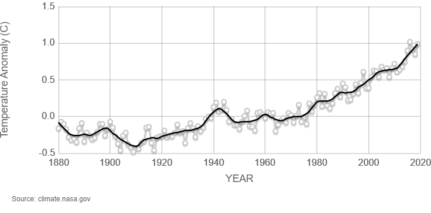
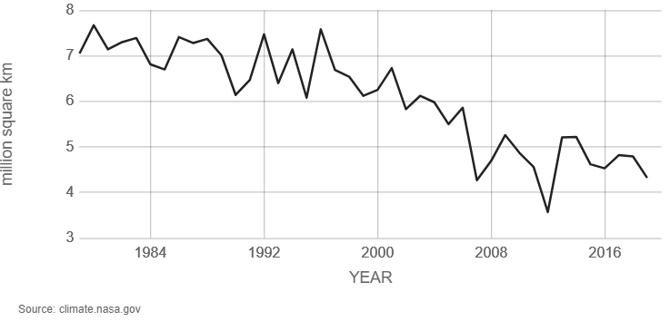
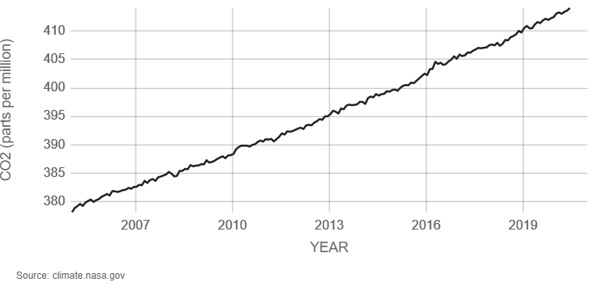
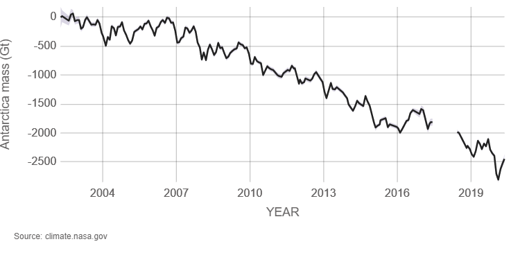
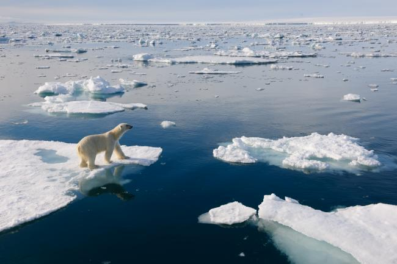

Environmental


Global warming has been an issue for decades in progressing countries for decades. Global temperature has been rising since the 1980s, at an increasing rate. Since 2019, the global temperature has risen over 1 degree Celcius, which is melting ice and increasing the sea level around the world.

With the constant increase in global temperature each year, sea level is rising at 0.14 inches a year. Since 1993, sea level has risen by over 99 millimeters or 4 inches. Four inches is the size of a common bat, which means that sea level grew taller by 4 inches!

Carbon Dioxide (CO2), a greenhouse gas, traps heat inside the surface of the Earth. CO2 is crucial for humans to survive because, without it, Earth would be freezing. However, as CO2 builds up in our atmosphere from burning fossil fuels, it has a warming effect that could change the earth’s climate. Excess amount of CO2 on our planet is the primary consequence of the melting ice.

This graph shows the ice mass of Antarctica in Gigatonnes. Ece mass is decreasing at 147 Gigatonnes each year, this explains the constant increase in sea level. With these changes, many animals like polar bears, penguins, and seals are losing their habitats.
